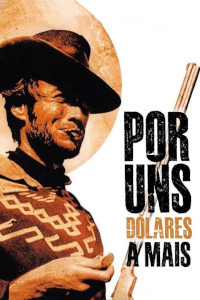
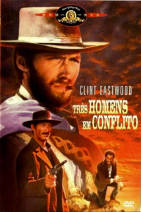
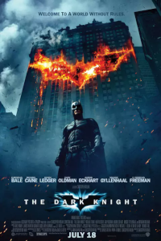
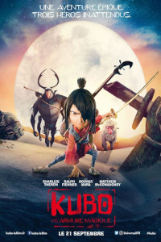
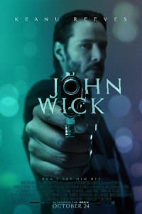
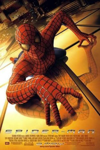
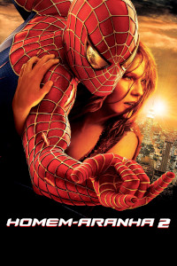
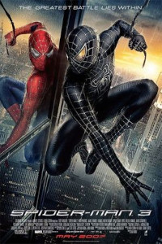
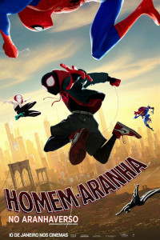
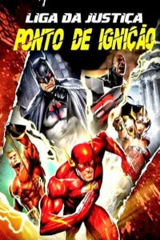

01FAROESTE · 1965Por Uns
Por Uns
Dólares a Mais
Clint Eastwood e Lee Van Cleef em um duelo de estratégia, vingança e pólvora.
DIÁRIO DE SESSÕES · 2026
Uma coleção pessoal de histórias que atravessaram a tela — dos clássicos do faroeste às aventuras do multiverso.
Ver catálogoEscolha um título, filtre por gênero ou simplesmente passeie pela coleção.

01Clint Eastwood e Lee Van Cleef em um duelo de estratégia, vingança e pólvora.

02Uma fortuna, três rivais e o duelo final mais icônico do cinema.

03Gotham enfrenta o caos e o mais imprevisível dos inimigos.

04Origamis, memórias e uma jornada visualmente encantadora.
Faroeste brasileiro, humor trash e uma aventura absolutamente singular.

06Coreografias precisas, neon e uma vingança sem freio.

07Uma origem heroica sobre escolhas, responsabilidade e coragem.

08O desafio de encontrar equilíbrio quando tudo começa a desabar.

09O herói encara seus próprios impulsos e o lado mais sombrio.

10Uma explosão de estilos, dimensões e possibilidades heroicas.

11Polícia, máfia e combate corpo a corpo em alta voltagem.
Nenhum filme encontrado. Tente outro título ou categoria.
O CineLog é um arquivo pessoal de filmes assistidos — uma forma de guardar as histórias que merecem uma segunda sessão e compartilhar boas descobertas.